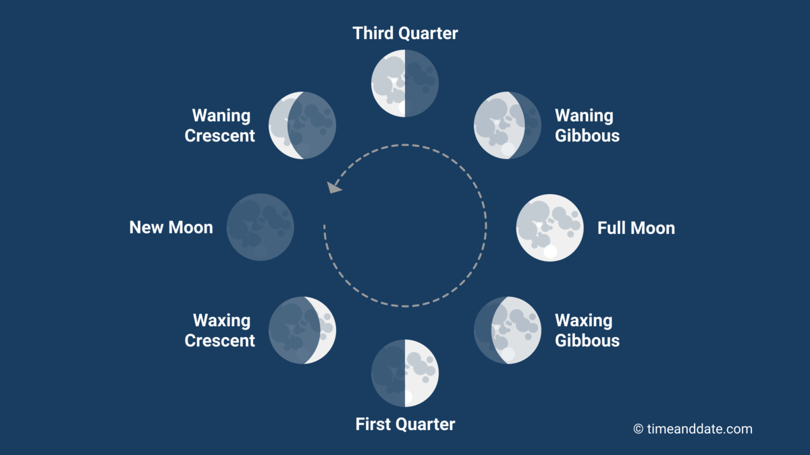

A Lua é o único satélite natural da Terra. Está a 384.400 km do planeta, e a cada ano se afasta 3,78 centímetros.
Apresenta uma exosfera fina e frágil, e sua estrutura é composta por crosta, manto e núcleo.
Sua superfície está repleta de crateras de impacto, fragmentos de rocha e poeira.